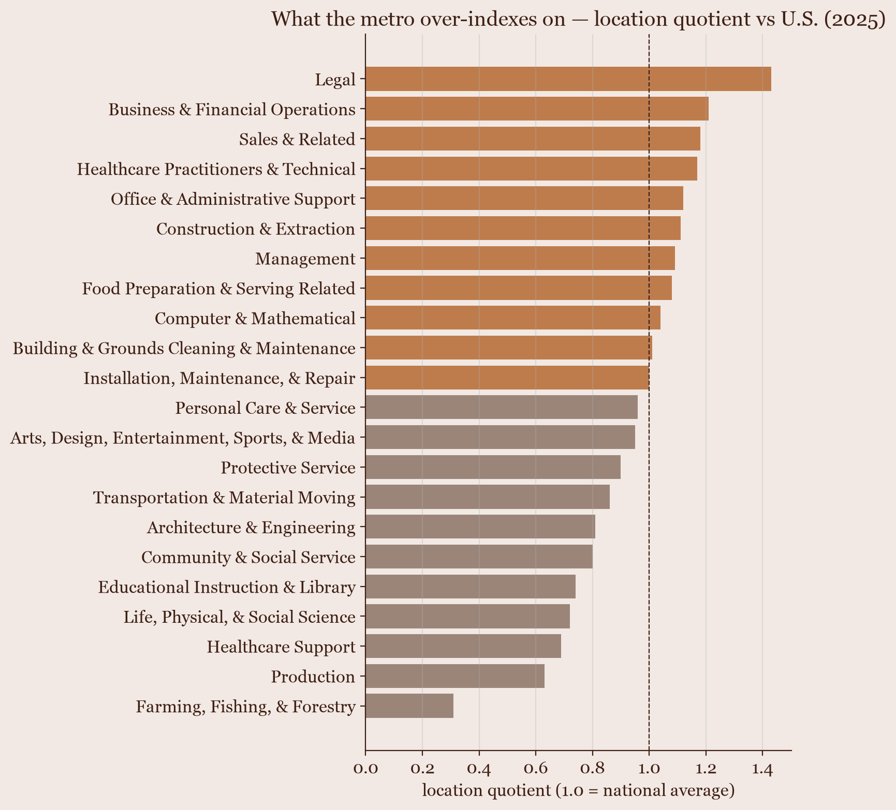
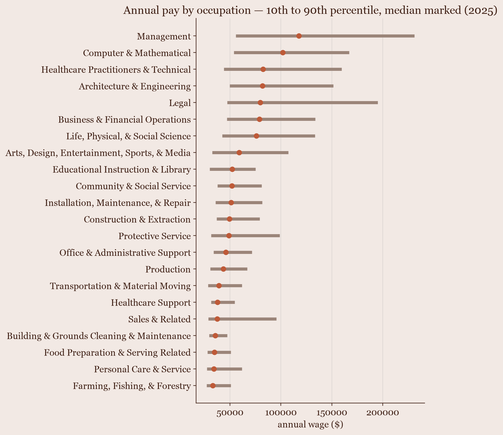
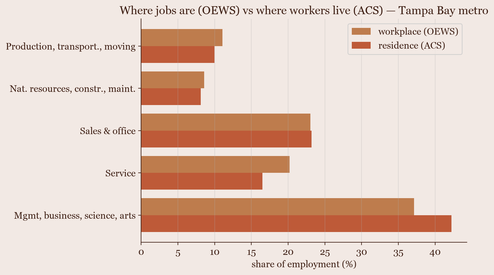

Tampa Bay Labor-Market Analysis
What the Tampa Bay economy runs on, and why where people work isn't where they live
- Role
- Solo (data pipeline, analysis, write-up)
- Timeline
- Personal project · 2026
- Stack
- BLS OEWS · Census ACS · DuckDB · dbt · marimo
The question
St. Pete keeps getting called an up-and-coming tech hub, and the number I kept hearing was that local tech jobs are growing "3× the national rate." I wanted to know two things: what the Tampa Bay economy is actually built on, and whether that tech-hub story holds up in the wage and employment data. So I pulled the government's own occupation and labor-force numbers and looked.
The data
Two federal sources. BLS OEWS gives employment and wages for every occupation in the Tampa metro against the national numbers (2025). Census ACS gives labor-force status, education, and earnings down to St. Petersburg city, plus what residents do for work (2023 5-year).
The one distinction the whole page rests on: OEWS counts jobs located in the metro (where the work is), and ACS counts people who live here (where the workers are). Those are different populations, so I keep them on separate charts and never subtract one from the other.
What the data showed
It isn't a tech town
The metro runs on 1,447,120 jobs. The biggest occupation groups are office and administrative support (185,560), sales (147,430), food service (138,090), business and finance (118,550), and management (113,290). Computer and mathematical work is 50,900 jobs, which puts it 12th of the 22 occupation groups, about the same size as production. It is a real part of the economy. It is not the center of it.

What it runs on is finance, legal, and service
A location quotient measures how concentrated an occupation is here compared with the country. The metro's highest are legal (1.43×), business and finance (1.21×), and sales (1.18×). Tech comes in at 1.04×, which is national parity, and the BLS-published location quotient says the same 1.04. Local tech pay averages $108,860, about 91% of the national tech wage. That is where the "3× the national rate" line runs out: on how concentrated tech is, and on what it pays, tech is an ordinary group here.

The pay runs from about $33k to $118k
Sorted by median wage, the occupation groups run from a median near $33,000 at the low end to about $118,000 at the top, and the spread inside each group is wide — the bar shows the 10th to the 90th percentile. It is a service-and-office economy with a well-paid professional layer on top, and a long tail of lower-wage work under it.

Where people work isn't where they live
Put the two datasets side by side and a gap opens up. In the metro, 42% of residents work in management, business, science, and arts jobs, but only 37% of the jobs located here are in that category. The metro hosts more service jobs (20%) than its residents fill (17%). St. Petersburg city itself skews higher: 41% of adults hold a bachelor's degree or more, against 34% metro-wide, and the city's median household income is $73,118. The read is a well-credentialed resident base plus commuting across the metro line, not an error in either dataset. It is the kind of thing you only see by holding the residence and workplace numbers next to each other.

How I built it
Every source went through the same pipeline. A Python script pulls it from the BLS or Census API into DuckDB; dbt models and tests turn the raw tables into the metrics above; a marimo notebook reconciles every number against the source; and a short written dossier records where a bug could hide. I ran the same steps on five sources now — the labor work was the fourth and fifth. It's the same repo as my St. Pete property-risk project, a different research thread. Building it once for flood data and running it again on labor data with no change to the method is the part I care about.
- BLS OEWS
- Census ACS
- DuckDB
- dbt
- Python · pandas
- marimo
- matplotlib
What I learned
- OEWS is a point-in-time survey, not a time series. BLS says so directly, and the API only serves the current year. A "growing 3× the national rate" claim can't be sourced from it cleanly, which is worth knowing before you repeat it.
- Residence and workplace are different questions. A metro wage and a resident's earnings measure different people, and the gap between them is a real finding once you stop treating them as the same number.
- The pipeline I built for flood risk carried over to labor data with no changes. That was the test of whether it was a method or a one-off.
- Checking the booster claim against the actual occupation data was the whole point, and it didn't hold. Tech is a mid-sized, average-paid group here, not a 3× standout.
Data & notebooks
Two federal sources, each run through the pipeline above.
| Source | Grain | Provider |
|---|---|---|
| Occupation employment & wages | metro × occupation | BLS OEWS |
| Labor force, education, earnings | city / county / metro | Census ACS 5-year |
| Occupation by residence | geo × occupation | Census ACS 5-year |
The notebooks
Static exports of the marimo notebooks behind the charts. Read-only snapshots; the interactive charts still respond.